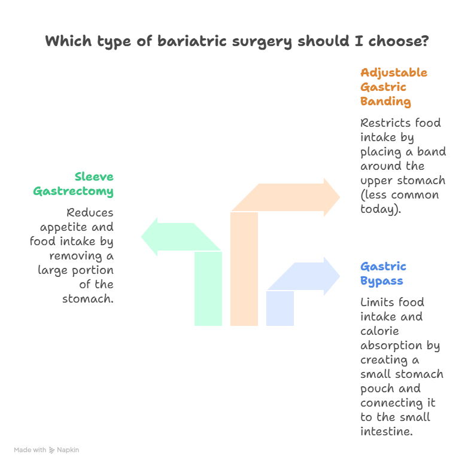

Diabetes, especially type 2, has become one of the most common health conditions worldwide. Millions of people live with high blood sugar levels, relying on daily medicines or insulin injections. While lifestyle changes like diet and exercise help, many patients struggle to achieve long-term control. This is where bariatric surgery has emerged as a game-changer. But many wonder: how does bariatric surgery reverse diabetes?
Studies from around the world show that bariatric surgery reverses type 2 diabetes in a large percentage of patients. In some cases, blood sugar levels return to normal within days after surgery, even before major weight loss happens. Specialists like Dr. Atul Peter’s, who is one of the most trusted experts for Bariatric Surgery in Delhi, have seen hundreds of patients experience freedom from diabetes after undergoing these procedures.
How does Bariatric Surgery reverse Diabetes?
So, how does bariatric surgery reverse diabetes? The answer lies in a powerful mix of hormonal changes and sustained weight loss.
Book Your Appointment TodayUnderstanding Diabetes
To understand how surgery helps, it’s important to first know the connection between obesity and diabetes. Type 2 diabetes happens when the body either does not make enough insulin or cannot use it effectively. Obesity, especially fat around the belly, makes the body resistant to insulin. This leads to high blood sugar levels and long-term complications like kidney disease, nerve damage, and heart problems.
How obesity contributes to diabetes:
- Fat cells release chemicals that make it harder for insulin to work.
- Excess fat in the liver and muscles blocks normal sugar absorption.
- Overeating and poor metabolism create constant pressure on the pancreas.
This is why losing weight is often the first step in controlling diabetes. But when diet and exercise fail, surgery offers another path.
What is Bariatric Surgery?
Bariatric surgery is a medical procedure designed to help people lose weight when diet and exercise alone do not work. It is not just about reducing body size — it also improves health conditions linked to obesity, including type 2 diabetes.

There are different types of bariatric surgery, but the most common are:
- Gastric Bypass Surgery – A small pouch is created in the stomach and directly connected to the small intestine, which limits how much food you eat and how many calories you absorb.
- Sleeve Gastrectomy – A large portion of the stomach is removed, leaving a banana-shaped pouch. This reduces appetite and food intake.
- Adjustable Gastric Banding – A band is placed around the upper part of the stomach to restrict food intake (less commonly used today).
Bariatric surgery is performed laparoscopically (through tiny incisions), which makes it safer and less painful than traditional open surgery.
How does Bariatric Surgery Reverse Diabetes?
Here comes the big question: how does bariatric surgery reverse diabetes? It works in three powerful steps:
1. Immediate Hormonal Reset
Within days of surgery, the gut releases more “good hormones” like GLP-1 that improve insulin sensitivity. This happens even before patients lose any weight, which is why many stop insulin right after surgery.
2. Reduced Sugar Absorption
Because food bypasses parts of the intestine (in gastric bypass), less sugar enters the bloodstream. This means the body doesn’t struggle with sugar overload anymore.
3. Long-Term Weight Loss
As the patient loses 20–40 kilos over the months, insulin resistance melts away with the fat. The body starts responding to insulin normally again, leading to long-term diabetes remission.
So when people ask, “Can bariatric surgery reverse diabetes?”, the answer is yes — through a combination of hormonal changes, reduced calorie absorption, and weight loss.
Bariatric Surgery vs. Diabetes Medications
For years, type 2 diabetes has been managed with tablets and insulin. These medicines help lower blood sugar, but they don’t fix the root cause: insulin resistance. That’s why many patients keep increasing their doses over time.
Now, compare this with bariatric surgery and reversal of diabetes:
| Aspect | Medications | Bariatric Surgery |
|---|---|---|
| Effect | Controls sugar temporarily | Resets hormones + reduces insulin resistance |
| Duration | Lifelong usage | Long-term, sometimes permanent remission |
| Side effects | Weight gain, low sugar episodes, dependency | Minimal if monitored properly |
| Cost over years | Medicines for decades | One-time surgery + supplements |
Long-Term Benefits of Bariatric Surgery on Diabetes
The real strength of bariatric surgery lies in its long-lasting impact. While medicines keep sugar under control only as long as you take them, surgery often puts diabetes into remission for years.
Here’s what studies and patient journeys show:
- Sustained sugar control: Many patients maintain normal blood sugar without insulin or tablets even 10–15 years after surgery.
- Better heart health: Lower blood pressure and cholesterol reduce heart attack risk.
- Improved kidney and eye health: Diabetes complications like nephropathy and retinopathy improve or stop progressing.
- Higher quality of life: With weight loss and diabetes reversal, patients report more energy, mobility, and confidence.
Possible Risks & Safety Concerns
Now, let’s be realistic. Just like any operation, bariatric surgery carries risks. The good news is that serious complications are rare, especially when the procedure is done by an experienced surgeon. But patients must still be aware.
| Short-Term Risks | Long-Term Risks |
|---|---|
| Mild pain or nausea in the first few days | Vitamin and mineral deficiencies (supplements required) |
| Infection at incision or surgical site | Small risk of weight regain if diet is not followed |
| Rare cases of bleeding or leakage | Need for lifelong follow-up and medical monitoring |
| Temporary difficulty adjusting to new eating habits | Possible digestive changes (dumping syndrome, diarrhea) |
Who Should Consider Bariatric Surgery for Diabetes?
Bariatric surgery isn’t for everyone with diabetes — it’s usually meant for people who are overweight or obese and have been struggling to control their blood sugar despite medicines and lifestyle changes. Doctors carefully screen patients before recommending surgery.
You may be a good candidate if:
- Your BMI is 35 or above with type 2 diabetes.
- You have diabetes-related health issues like high blood pressure or sleep apnea.
- You have tried diets, exercise, and medicines for years with little success.
- You are committed to following a lifelong healthy lifestyle after surgery.
In fact, research shows that bariatric surgery reverses type 2 diabetes most effectively in people who undergo it earlier in their disease course. This means if you’ve had diabetes for 2–5 years, the chances of remission are higher than if you’ve had it for 15–20 years.
Life After Bariatric Surgery: What Changes?
Life after surgery is different — but in a good way. Patients who once relied on insulin or daily tablets often find themselves free of diabetes medication. However, success depends on lifestyle adjustments.
What changes after surgery?
- Diet: Smaller, healthier meals; no overeating.
- Energy: More stamina and the ability to do physical activities.
- Health: Lower sugar, improved blood pressure, better cholesterol.
- Routine: Regular follow-ups and supplements become part of daily life.
One of the most rewarding changes is emotional well-being. Many patients share how they no longer feel “controlled by diabetes.” Instead, they feel empowered, active, and hopeful.
How does Bariatric Surgery reverse Diabetes?
So, how does bariatric surgery reverse diabetes? The answer lies in a powerful mix of hormonal changes and sustained weight loss.
Book Your Appointment TodayFinal Thoughts
So, how does bariatric surgery reverse diabetes? The answer lies in a powerful mix of hormonal changes, reduced calorie absorption, and sustained weight loss. For many patients, this surgery does what years of medicines could not — it restores normal sugar control and, in many cases, completely stops the need for insulin or tablets.
But here’s the key: it’s not a shortcut. Patients must commit to healthy eating, regular exercise, and follow-up care for lasting results. The safety and success also depend on choosing an experienced surgeon. For those exploring Bariatric Surgery in Delhi, experts like Dr. Atul Peter’s combine skill, technology, and long-term guidance to ensure patients achieve not just weight loss, but true freedom from diabetes.
Frequently Asked Questions
Can Bariatric Surgery reverse Diabetes permanently?
How soon after surgery does diabetes improve?
Is Bariatric Surgery safe for Diabetic patients?
Do all Diabetic patients qualify for surgery?
Will I still need medicines after surgery?
Which is better — medicines or surgery for diabetes?
Recommended Further Reading
Have Personal Health Questions?
Consult with Dr. Atul Peters and our expert multidisciplinary team at Max Smart Super Speciality Hospital, Saket, New Delhi.
Book Your Consultation